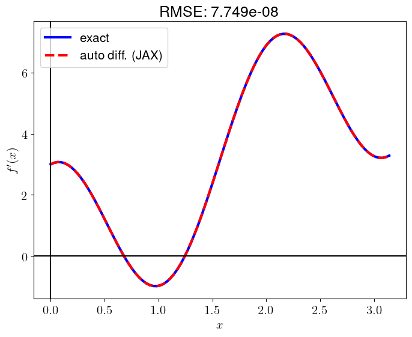

Code
import matplotlib.pyplot as plt
plt.rcParams.update({
"text.usetex": True,
"font.family": "Helvetica",
"font.size": 15,
"figure.figsize": (8, 6)
})There are four techniques to compute derivatives: hand-coded analytical derivative, finite differentiation, symbolic differentiation, and automatic differentiation (Margossian 2019). In this post, I will demonstrate how to find the derivative of a simple 1D scalar function, f(x) = x^2 + \sin(3x), using each of these four methods in Python within the interval x \in [0, \pi].
You can find the analytical derivative of the fucntion f(x) = x^2 + \sin(3x) using the table of derivatives learned in your Calculus course.
\begin{align*} \frac{d}{dx} f(x) & = \frac{d}{dx} (x^2 + \sin(3x)) \\ & = \frac{d}{dx} x^2 + \frac{d}{dx} \sin(3x) \\ & = 2x + 3\cos(3x) \end{align*}
Thus, for every x,
f'(x) = 2x + 3\cos(3x)
According to the previous post where I explained how to draw a 1D scalar function in Python, I will plot f(x) and its derivative f'(x) using Matplotlib.
import matplotlib.pyplot as plt
plt.rcParams.update({
"text.usetex": True,
"font.family": "Helvetica",
"font.size": 15,
"figure.figsize": (8, 6)
})import numpy as np
import matplotlib.pyplot as plt
func = lambda x: x**2 + np.sin(3*x)
d_func = lambda x: 2*x + 3*np.cos(3*x)
x = np.linspace(0, np.pi, 100)
f = func(x)
df_dx = d_func(x)
plt.plot(x, f, label=r"$f(x)$")
plt.plot(x, df_dx, label=r"$f'(x)$")
plt.axvline(0, color='k')
plt.axhline(0, color='k')
plt.xlabel(r"$x$")
plt.legend()
plt.show()You can derive the following finite differentiation formulae using Taylor’s theorem. I will explain how to derive these formulae using SymPy in the another post.
NumPyNumPy arrays make the implementation of finite differentitation very straightforward. It’s important to note that at the left boundary (x=0), I use the forward difference, while at the right boundary (x=\pi), I use the backward difference. Within the domain (0<x<\pi), I use the central difference.
import numpy as np
import matplotlib.pyplot as plt
func = lambda x: x**2 + np.sin(3*x)
x = np.linspace(0, np.pi, 100)
f = func(x)
# calculate the spacing dx
dx = x[1]-x[0]
# you can use np.diff
# dx = np.diff(x)[0] or
# dx = np.mean(np.diff(x))
# create an array with the same shape as `f`
df_dx = np.zeros_like(f)
# forward difference (1st order) at the left boundary
df_dx[0] = (f[1] - f[0]) / dx
# backward difference (1st order) at the right boundary
df_dx[-1] = (f[-1] - f[-2]) / dx
# central difference (2nd accuracy) within the domain
df_dx[1:-1] = (f[2:] - f[:-2]) / (2*dx)
# plot for comparison
exact_d_func = lambda x: 2*x + 3*np.cos(3*x)
df_dx_exact = exact_d_func(x)
plt.plot(x, df_dx_exact, 'b-', lw=3, label="exact")
plt.plot(x, df_dx, 'r--', lw=3, label="finite diff.")
plt.axvline(0, color='k')
plt.axhline(0, color='k')
plt.xlabel(r"$x$")
plt.ylabel(r"$f'(x)$")
RMSE = np.sqrt(np.mean((df_dx_exact - df_dx)**2))
plt.title(f"RMSE: {RMSE:.3e}")
plt.legend()
plt.show()
In the case of using 1st order accuracy formulae, the errors at the boundaries are
print('1st order')
print(f'dx : {dx:.4f}')
print(f'left : {np.abs(df_dx[0] - df_dx_exact[0]):.4f}')
print(f'right: {np.abs(df_dx[-1] - df_dx_exact[-1]):.4f}')1st order
dx : 0.0317
left : 0.0272
right: 0.0272If we use the 2nd order accuracy formulae at the boundaries instead, we get the following errors:
# forward difference (2nd order) at the left boundary
df_dx[0] = (-3*f[0] + 4*f[1] - f[2]) / (2*dx)
# backward difference (2nd order) at the right boundary
df_dx[-1] = (3*f[-1] - 4*f[-2] + f[-3]) / (2*dx)
print('2nd order')
print(f'dx^2 : {dx**2:.4f}')
print(f'left : {np.abs(df_dx[0] - df_dx_exact[0]):.4f}')
print(f'right: {np.abs(df_dx[-1] - df_dx_exact[-1]):.4f}')2nd order
dx^2 : 0.0010
left : 0.0090
right: 0.0090np.allclose(df_dx_exact, df_dx)Falsenp.allclose(df_dx_exact, df_dx, atol=1e-2)TruefindiffThere is a convenient library for finite differentiation in Python: findiff
import numpy as np
import matplotlib.pyplot as plt
from findiff import FinDiff
func = lambda x: x**2 + np.sin(3*x)
x = np.linspace(0, np.pi, 100)
f = func(x)
# calculate the spacing dx
dx = x[1]-x[0]
# construct the differential operator: FinDiff(axis, spacing, degree)
d_dx = FinDiff(0, dx, 1)
df_dx_findiff = d_dx(f)
# plot for comparison
exact_d_func = lambda x: 2*x + 3*np.cos(3*x)
df_dx_exact = exact_d_func(x)
plt.plot(x, df_dx_exact, 'b-', lw=3, label="exact")
plt.plot(x, df_dx_findiff, 'r--', lw=3, label="finite diff. (findiff)")
plt.axvline(0, color='k')
plt.axhline(0, color='k')
plt.xlabel(r"$x$")
plt.ylabel(r"$f'(x)$")
RMSE = np.sqrt(np.mean((df_dx_exact - df_dx_findiff)**2))
plt.title(f"RMSE: {RMSE:.3e}")
plt.legend()
plt.show()By default, findiff uses 2nd order accuray.
np.allclose(df_dx, df_dx_findiff)TrueYou can also find finite difference coefficients using this library. (see Section 2.1)
import findiff
# coefficients of 2nd order accuracy formulae for 1st derivative
findiff.coefficients(deriv=1, acc=2){'center': {'coefficients': array([-0.5, 0. , 0.5]),
'offsets': array([-1, 0, 1]),
'accuracy': 2},
'forward': {'coefficients': array([-1.5, 2. , -0.5]),
'offsets': array([0, 1, 2]),
'accuracy': 2},
'backward': {'coefficients': array([ 0.5, -2. , 1.5]),
'offsets': array([-2, -1, 0]),
'accuracy': 2}}np.allclose(df_dx_exact, df_dx_findiff)Falsenp.allclose(df_dx_exact, df_dx_findiff, atol=1e-2)TruenumdifftoolsThere is another convenient library for automatic numerical differentiation in Python: numdifftools
import numpy as np
import matplotlib.pyplot as plt
import numdifftools as nd
func = lambda x: x**2 + np.sin(3*x)
# construct a derivative function (FD)
d_func = nd.Derivative(func, n=1)
x = np.linspace(0, np.pi, 100)
df_dx_numdifftools = d_func(x)
# plot for comparison
exact_d_func = lambda x: 2*x + 3*np.cos(3*x)
df_dx_exact = exact_d_func(x)
plt.plot(x, df_dx_exact, 'b-', lw=3, label="exact")
plt.plot(x, df_dx_numdifftools, 'r--', lw=3, label="finite diff. (numdifftools)")
plt.axvline(0, color='k')
plt.axhline(0, color='k')
plt.xlabel(r"$x$")
plt.ylabel(r"$f'(x)$")
RMSE = np.sqrt(np.mean((df_dx_exact - df_dx_numdifftools)**2))
plt.title(f"RMSE: {RMSE:.3e}")
plt.legend()
plt.show()Since this library uses an adaptive finite differences with a Richardson extrapolation methodology, the result is maximally accurate.
np.allclose(df_dx_exact, df_dx_numdifftools)TrueSympyBy using SymPy, we can symbolically differentiate f(x) = x^2 + \sin(3x)
from sympy import symbols, sin, diff
x = symbols('x')
f = x**2 + sin(3*x)
f\displaystyle x^{2} + \sin{\left(3 x \right)}
df_dx_sympy = diff(f, x)
df_dx_sympy\displaystyle 2 x + 3 \cos{\left(3 x \right)}
As I mentioned in the previous post, SymPy also supports plotting of a function.
from sympy.plotting import plot
p1 = plot(f, (x, 0, np.pi), legend=True, show=False, label="$f(x)$", ylabel='')
p2 = plot(df_dx_sympy, (x, 0, np.pi), legend=True, show=False, label=r"$f'(x)$", ylabel='')
p1.extend(p2)
p1.show()
In mathematics and computer algebra, automatic differentiation (auto-differentiation, autodiff, or AD), also called algorithmic differentiation, computational differentiation, is a set of techniques to evaluate the partial derivative of a function specified by a computer program. #
The efficient implementation of automatic differentiation is quite challenging. However, since the backpropagation is used to minimize loss in neural networks and is essentially a reverse-mode automatic differentiation, most deep learning libraries natively support automatic differentiation tools. In this post, I will demonstrate how to use automatic differentiation in Python with TensorFlow, PyTorch, and JAX.
TensorFlowTensorFlow is an end-to-end open source platform for machine learning.
import numpy as np
import matplotlib.pyplot as plt
import tensorflow as tf
func = lambda x: x**2 + tf.math.sin(3*x)
x = tf.linspace(0.0, tf.constant(np.pi), 100)
# calculate derivatives of `f`
with tf.GradientTape() as tape:
tape.watch(x)
f = func(x)
df_dx_tf = tape.gradient(f, x)
df_dx_tf = df_dx_tf.numpy()
# plot for comparison
exact_d_func = lambda x: 2*x + 3*np.cos(3*x)
x_numpy = x.numpy()
df_dx_exact = exact_d_func(x_numpy)
plt.plot(x_numpy, df_dx_exact, 'b-', lw=3, label="exact")
plt.plot(x_numpy, df_dx_tf, 'r--', lw=3, label="finite diff. (TensorFlow)")
plt.axvline(0, color='k')
plt.axhline(0, color='k')
plt.xlabel(r"$x$")
plt.ylabel(r"$f'(x)$")
RMSE = np.sqrt(np.mean((df_dx_exact - df_dx_tf)**2))
plt.title(f"RMSE: {RMSE:.3e}")
plt.legend()
plt.show();np.allclose(df_dx_exact, df_dx_tf)TruePyTorchPyTorch is a Python package that provides two high-level features: - Tensor computation (like NumPy) with strong GPU acceleration - Deep neural networks built on a tape-based autograd system
import numpy as np
import matplotlib.pyplot as plt
import torch
func = lambda x: x**2 + torch.sin(3*x)
x = torch.linspace(0, np.pi, 100)
# calculate derivatives of `f`
x.requires_grad = True
f = func(x)
df_dx_torch = torch.autograd.grad(f, x, grad_outputs=torch.ones_like(f),
retain_graph=True, create_graph=True, allow_unused=True)[0]
df_dx_torch = df_dx_torch.detach().numpy()
# plot for comparison
exact_d_func = lambda x: 2*x + 3*np.cos(3*x)
x_numpy = x.detach().numpy()
df_dx_exact = exact_d_func(x_numpy)
plt.plot(x_numpy, df_dx_exact, 'b-', lw=3, label="exact")
plt.plot(x_numpy, df_dx_torch, 'r--', lw=3, label="finite diff. (PyTorch)")
plt.axvline(0, color='k')
plt.axhline(0, color='k')
plt.xlabel(r"$x$")
plt.ylabel(r"$f'(x)$")
RMSE = np.sqrt(np.mean((df_dx_exact - df_dx_torch)**2))
plt.title(f"RMSE: {RMSE:.3e}")
plt.legend()
plt.show()np.allclose(df_dx_exact, df_dx_torch)TrueJAXJAX is Autograd and XLA, brought together for high-performance numerical computing, including large-scale machine learning research.
import numpy as np
import matplotlib.pyplot as plt
import jax.numpy as jnp
import jax
func = lambda x: x**2 + jnp.sin(3*x)
x = jnp.linspace(0, jnp.pi, 100)
# calculate derivatives of `f`
df_dx_jax = jax.vmap(jax.grad(func))(x)
df_dx_jax = np.array(df_dx_jax)
# plot for comparison
exact_d_func = lambda x: 2*x + 3*np.cos(3*x)
x_numpy = np.array(x)
df_dx_exact = exact_d_func(x_numpy)
plt.plot(x_numpy, df_dx_exact, 'b-', lw=3, label="exact")
plt.plot(x_numpy, df_dx_jax, 'r--', lw=3, label="finite diff. (JAX)")
plt.axvline(0, color='k')
plt.axhline(0, color='k')
plt.xlabel(r"$x$")
plt.ylabel(r"$f'(x)$")
RMSE = np.sqrt(np.mean((df_dx_exact - df_dx_jax)**2))
plt.title(f"RMSE: {RMSE:.3e}")
plt.legend()
plt.show()
np.allclose(df_dx_exact, df_dx_jax)True